藤沢駅から徒歩5分
包括的診療を行う玉木歯科医院
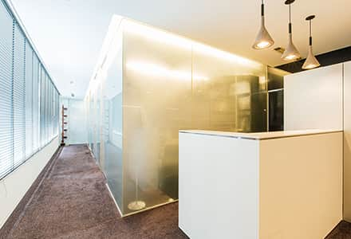
「玉木歯科医院」は、JR東海道本線・小田急江ノ島線・江ノ島電鉄線の藤沢駅より徒歩5分の距離にある、藤沢市南藤沢の歯医者です。当院は、日本歯周病学会専門医・指導医である院長が、歯周病治療をはじめとしたお口全体を考えた包括的な診療を行っています。予防処置やインプラント治療、セラミック治療、精密義歯、大学病院で専門に治療を行っている歯科医師による根管治療など、患者様のお悩みを解決するための幅広い治療に対応しています。
来院されたすべての患者様へ生涯にわたり健康的な口腔内環境を提供し、豊かな人生を送っていただけるようサポートいたします。
玉木歯科医院の医院概要
| 医院名 | 玉木歯科医院 |
|---|---|
| 院長 | 玉木理一郎 |
| 住所 |
〒251-0055 神奈川県藤沢市南藤沢18-1 グレイシャスＫ南藤沢 4F |
| 電話番号 | 0466-29-5007 |
| 診療時間 |
午前 10:00～13:00 午後 14:00～18:30 (土曜は17:00まで) |
| 休診日 | 木曜、日曜、祝日 |
| 最寄り駅 | JR東海道本線・小田急江ノ島線・江ノ島電鉄線：藤沢駅 徒歩5分 |
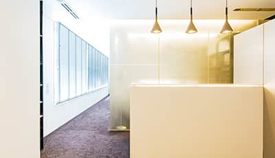
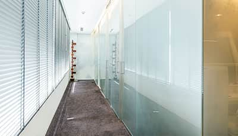
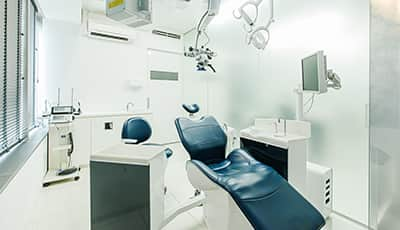
アクセス
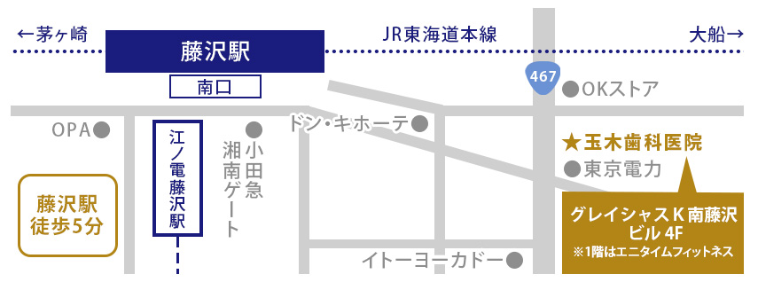
JR東海道本線 藤沢駅からお越しの方
1藤沢駅の改札を出て右に進み、階段を下ります。
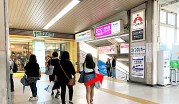
2そのまま直進し、南口から外に出て左に曲がります。
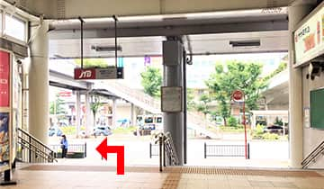
3横断歩道を直進し、マクドナルドの角を右折します。
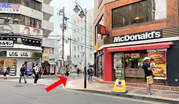
4ドン・キホーテの角を左に曲がり直進します。
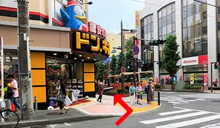
5横断歩道を渡り左へ曲がります。
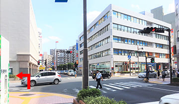
61階にエニタイムフィットネスがあるビルが当院の入っているビルです。
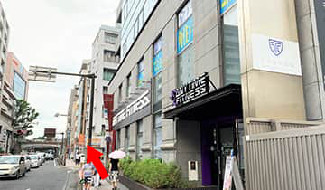
7奥の入り口から入り、エレベーターで4階まで登ります。
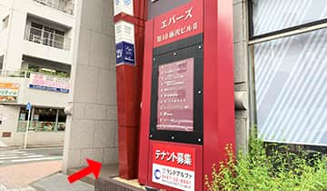
8エレベーターを降り、左に進むと当院の入り口になります。
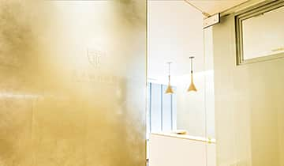
小田急江ノ島線 藤沢駅からお越しの方
1改札を出て右に曲がります。
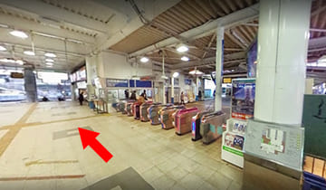
2南口から外に出て左に曲がります。
3横断歩道を直進、マクドナルドの角を右に曲がります。
4ドン・キホーテの角を左に曲がります。
5横断歩道を渡り左へ曲がります。
61階にエニタイムフィットネスがあるビルが当院の入っているビルです。
7奥の入り口から入り、エレベーターで4階まで登ります。
8エレベーターを降り、左に進むと当院の入り口になります。
江ノ島電鉄線 藤沢駅からお越しの方
1改札を出て直進します。
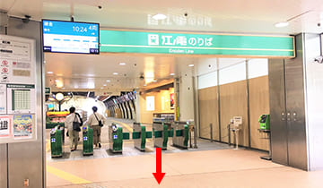
2外に出て、右に曲がりデッキの上を進みます。
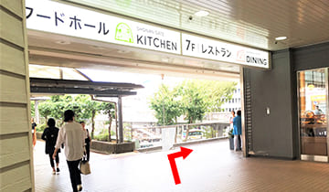
3突き当りを右に曲がります。
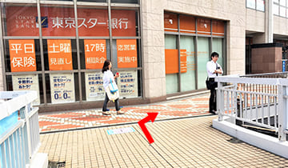
4階段を下り、ドン・キホーテを左手にそのまま直進します。
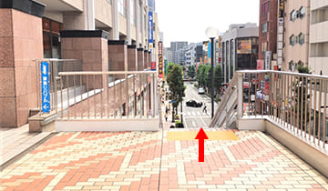
5横断歩道を渡り左へ曲がります。
61階にエニタイムフィットネスがあるビルが当院の入っているビルです。
7奥の入り口から入り、エレベーターで4階まで登ります。
8エレベーターを降り、左に進むと当院の入り口になります。
お車でご来院の方
駐車場のご案内
ショウワパーク南藤沢
【住所】〒251-0055 神奈川県藤沢市南藤沢13
| 【料金】 |
全日：8:00～22:00 20分 \100 全日：22:00～8:00 60分 \100 最大料金：月～金 入庫後24時間\1500(繰返し有) 最大料金：全日 22:00～8:00 \500(繰返し有) |
|---|
【収容台数】35台
遠方からお越しの方
羽田空港から藤沢駅へのアクセス
【電車】羽田空港国内線ターミナルより、電車で約1時間ほどです。詳しい電車につきましては、乗換案内をご確認ください。
【バス】京浜急行バスより空港バスが運行されております。交通系ICカードがご利用いただけます。※予約制
料金：大人1,370円・小児690円
- 羽田空港 第1ターミナル 1階到着ロビー 11番のりばより：1時間20分
- 羽田空港 第2ターミナル 1階到着ロビー 11番のりばより：1時間25分
- 羽田空港 国際線ターミナル 9番のりばより：1時間35分
詳しくはこちらをご確認ください。
新幹線の駅から藤沢駅へのアクセス
東京駅から
ＪＲ東海道本線の電車で乗り換えなしで、50分ほどかかります。詳しくは乗換案内をご確認ください。
新横浜駅から
ＪＲ横浜線で横浜駅に向かい、ＪＲ東海道本線に乗換えます。トータル1時間ほどかかります。詳しくは乗換案内をご確認ください。
小田原駅から
ＪＲ東海道本線・上野東京ライン・ＪＲ快速アクティーの電車で乗り換えなしで、30分ほどかかります。詳しくは乗換案内をご確認ください。